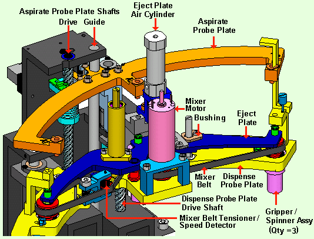

Replacing Mixer Belt
This procedure describes how to replace the mixer belt.
Perform this procedure when the mixer belt:
Figure 59: Reference drawing
- is worn or defective.
- must be removed to service another part or assembly.

-
Shut down the DxI instrument.
- Select Configure > PC Admin > System Admin > Shutdown Instrument to exit the software in preparation for powering off the instrument.
- Enter the password Access2Support, and then select OK.
- At the pop-up You must now turn off the instrument, using the instrument power switch, select OK.
- After the instrument software has shut down, turn off the instrument at the power switch.
-
Prepare to remove the mixer belt.
-
Remove dispense probe 2 and dispense probe 3 from the dispense probe plate, and place them to the side.
Note: Do not disconnect the probe tubing from the connection panel.
-
Remove all three aspirate probes from the aspirate probe plate, and place them to the side.
Note: Do not disconnect the probe tubing from the connection panel.
-
Remove the substrate probe from the dispense probe plate. Place the probe where it is safe from damage or contamination.
Note: Refer to the AU: Replacing Substrate Probe procedure.
- Remove and label the pneumatic tubing connected to the eject plate air cylinder.
-
Cut the tie-wraps from the eject plate air cylinder and remove the cut tie-wrap from the instrument.
Note: When removing the tie-wraps, do not cut any wires.
-
Disconnect the eject plate home sensor, J7, from the upper analytical module interface PCB. Remove the tie-wraps.
Note: This connection is found at the bottom right of the upper analytical module Interface PCB. When removing the tie-wraps, do not cut any wires.
- Remove the screw attaching the mounting bracket on the eject plate to the dispense plate. It is located behind the eject plate air cylinder.
-
Remove dispense probe 2 and dispense probe 3 from the dispense probe plate, and place them to the side.
-
Remove the mixer belt.
- Pull the mixer belt upward and off the grippe-spinner pulley number 1 and pulley number 3.
- Slide the mixer belt under the mixer motor pulley with the tooth side down.
-
Slide the mixer belt between the mixer motor and the eject plate.
Note: The mixer belt should be above the eject plate.
- Slide the mixer belt under the eject plate connection to the eject plate air cylinder (where the screw has been removed).
- Remove the mixer belt from the module and the eject plate home sensor harness.
-
Install the mixer belt.
- Route the home sensor lead of the eject plate through the new mixer belt.
- Slide the mixer belt under the eject plate connection to the eject plate air cylinder (where the screw has been removed).
- Slide the mixer belt between the mixer motor and the eject plate.
-
Slide the mixer belt under the mixer motor pulley with the tooth side down.
Note: Be sure the mixer belt goes around the guide between the mixer motor and the tensioner.
- Pull the mixer belt around the gripper-spinner pulley number 1 and pulley number 3.
-
Complete the installation.
- Install the screw attaching the mounting bracket on the eject plate to the dispense plate. It is located behind the eject plate air cylinder.
- Connect the eject plate home sensor, J7, from the upper analytical module interface PCB. Install new tie-wraps around the wire harnesses.
-
Install two new tie-wraps around the eject plate air cylinder.
The tie-wraps keep the wires from the mixer motor and the eject plate home sensor from interfering with the movement of the plates.
-
Install the pneumatic tubing to the correct fittings on the eject plate air cylinder.
The tubing should be marked.
- With the belt routed and positioned on all the pulleys, roll the belt to confirm that it rotates correctly.
-
Install the aspirate, dispense, and substrate probes.
Note: Refer to the AU: Replacing Substrate Probe procedure.
- Manually move the dispense and aspirate plates fully up and down to verify that the wire and tubing routings have sufficient slack and do not snag or pull on the probes or probe connection panel.
- Power up the instrument.
- Close the instrument cover.
- Initialize the system.
-
Confirm mixer speed is correct.
- In the user interface, select Diagnostics > Subsystem Diagnostics > RV Mixer.
- Confirm that the mixer speed is 2200 ±770 rpm.
-
If the mixer speed is not 2200 ±770 rpm, then:
- Run 10 Test Cycles of the RV Mixer.
- Initialize the instrument (to recalibrate the mixer system).
- In the user interface, select Diagnostics > Subsystem Diagnostics > RV Mixer.
- Confirm that the mixer speed is 2200 ±770 rpm.
-
Verify mixer belt operation.
- From the Main Menu, select Diagnostics > Device Diagnostics > Mechanics > Alignments.
- Select Aspiration Probe Plate as the device option, and then select HOME.
- Select Dispense Probe Plate as the device option, then select HOME.
- Select Back twice to return to Device Diagnostics.
- From the Device Diagnostics screen, select Exerciser..
-
Perform 50 Reps of the Vessel Exerciser.
- 25 Reps of Reaction Route 1
- 25 Reps of Reaction Route 2
- Mixer enabled
- Select Cycle Vessels.
-
Observe the system and verify that:
- the exerciser does not fail.
- the mixer belt is functioning correctly.
-
Verify system operation.
-
Perform system verification as stated in the Verification of Service Repair document .
Refer to the Admin: Verification of Service Repair document.
-
Perform system verification as stated in the Verification of Service Repair document .